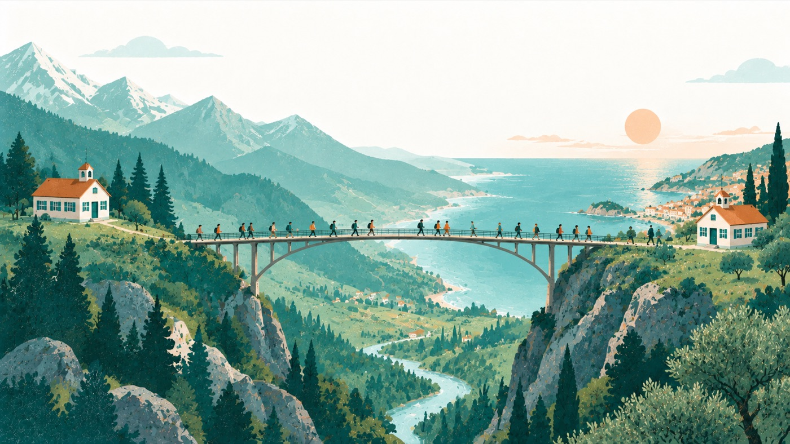
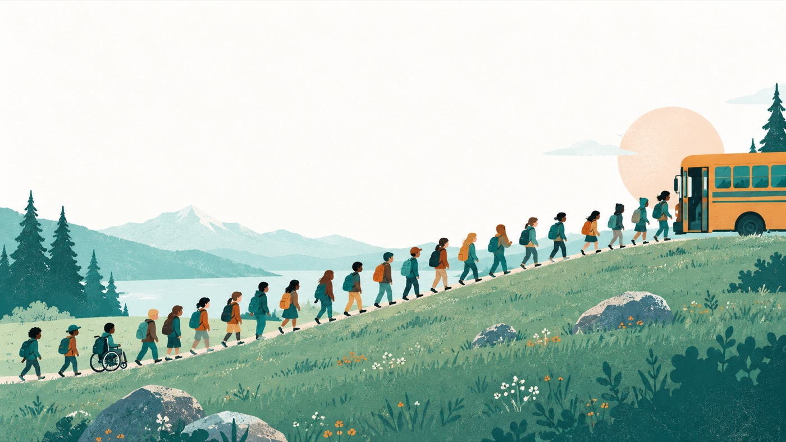
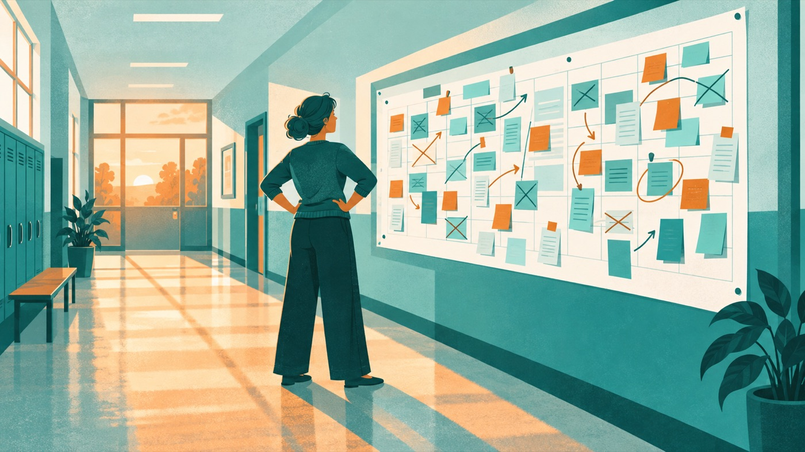

Warum
NÖMS Hirtenberg · Digitale Mappe
Erasmus+ an einer kleinen Schule
Wie wir mit 120 Kindern und ohne Extrabudget nach Italien gekommen sind. Und wie Sie das auch schaffen.
Warum Sie das hier lesen
In ganz Niederösterreich gibt es zwei Mittelschulen mit Erasmus+. Im Süden des Landes hat kaum eine Schule das Programm überhaupt beantragt.
Das liegt fast nie daran, dass Anträge abgelehnt werden. Es liegt daran, dass kaum jemand antritt, weil das Ganze von außen nach Brüssel, Formularen und Fachpersonal aussieht. Wir sind eine Schule mit 120 Kindern im Triestingtal, ohne Projektstelle und ohne eigenes Budget dafür. Wenn es bei uns geht, geht es bei Ihnen auch.
Auf dieser Seite steht, was wir gemacht haben, in welcher Reihenfolge, und an welchen vier Stellen es bei uns fast gescheitert wäre.

Was wir gemacht haben
- Eine Schule mit 120 Kindern im Triestingtal, ohne Projektstelle und ohne Extrabudget.
- Wir haben uns für ein Programm beworben, das hier im Süden praktisch niemand beantragt.
- Wir sind nicht mit den Besten gefahren, sondern in zwei Etappen mit allen.
- Und demnächst kommen die italienischen Kinder zu uns und schlafen auf Feldbetten im Turnsaal, die wir selbst herrichten.
Der letzte Punkt ist uns wichtig, weil er zeigt, wie wir arbeiten. Gastfamilien kann nicht jede Schule organisieren, einen Turnsaal hat jede. Wir machen es mit dem, was wir haben.
Der Gedanke dahinter
Für die meisten Schulen ist Erasmus+ eine Belohnung.
Bei uns ist es ein
Ausgleich.
Der Normalfall bei Auslandsfahrten ist Auswahl. Es fahren die Guten, die Motivierten, die, deren Eltern es sich leisten können. Wer ohnehin schon viel gesehen hat, sieht noch mehr.
Wir haben es umgedreht. Bei uns war es für manche Kinder das erste Mal so weit weg von zuhause. Genau die wären bei einem Auswahlverfahren nicht dabei gewesen, und genau für die hat sich der ganze Aufwand gelohnt.

Der Weg zum eigenen Erasmus+
In der Reihenfolge, in der wir es gemacht haben. Die Namen der Formulare ändern sich gelegentlich, der Ablauf nicht.
Die Schule bei der EU registrieren
Jede Einrichtung braucht eine eigene Kennnummer, bevor sie überhaupt etwas beantragen kann. Das ist ein Formular, kein Projekt, und in einer Freistunde erledigt.
Entscheiden: einzelnes Projekt oder Akkreditierung
Für den Anfang gibt es kleinere Kurzzeitprojekte, die ohne langen Vorlauf auskommen. Wer es dauerhaft will, beantragt einmal eine Akkreditierung und bekommt danach jährlich Mittel, ohne jedes Mal ein neues Projekt schreiben zu müssen.
Für Schulleitungen ist das der wichtigste Satz auf dieser Seite. Der große Antrag ist einmalig, nicht jährlich.
Eine Partnerschule suchen, die wirklich passt
Nicht die erste, die zusagt, sondern eine mit ähnlichen Schwerpunkten. Das entscheidet später darüber, ob aus dem Austausch ein gemeinsames Vorhaben wird oder zwei parallele Ausflüge. Die Suche ist nach dem Antrag die zweitgrößte Hürde und braucht am meisten Geduld.
Den Antrag stellen
Er ist umfangreich, aber nicht schwierig. Man beschreibt, was man vorhat, warum, und was die Kinder davon haben. Die Nationalagentur OeAD berät dabei kostenlos, und dieses Angebot sollte man nutzen, bevor man etwas einreicht.
Die Fahrt so planen, dass alle mitkönnen
Hier entscheidet sich, ob es eine Belohnung oder ein Ausgleich wird. Die vier Stellen, an denen es hängt, stehen im nächsten Abschnitt.
Die konkreten Fristen, Formularbezeichnungen und Fördersätze ändern sich von Jahr zu Jahr. Verlassen Sie sich dafür auf den OeAD und nicht auf diese Seite. Was hier steht, ist unsere Erfahrung mit dem Ablauf.

Die vier Hürden und wie wir sie genommen haben
Der Antrag ist nicht das Schwierige. Schwierig wird es an dem Tag, an dem man den Eltern erklärt, dass wirklich alle mitfahren. Diese vier Stellen sind es, an denen es bei uns fast gescheitert wäre.
Geld
Welche Familie hätte das nicht zahlen können, und wie löst man das, ohne dass das Kind es merkt?
[[Hier trägt die NÖMS Hirtenberg ihre Lösung ein.]]
Können
Kinder mit sonderpädagogischem Förderbedarf, mit Beeinträchtigung, mit Medikamenten, mit Angst vorm Weggehen. Was muss man organisieren, damit es trotzdem geht?
[[Hier trägt die NÖMS Hirtenberg ihre Lösung ein.]]
Sprache und Herkunft
Wie geht es Kindern, die zuhause nicht Deutsch sprechen? Und was bedeutet eine Auslandsfahrt für ein Kind, das selbst Migrationserfahrung hat?
[[Hier trägt die NÖMS Hirtenberg ihre Lösung ein.]]
Zutrauen
Welche Eltern wollen zuerst nicht, und was stimmt sie um?
[[Hier trägt die NÖMS Hirtenberg ihre Lösung ein.]]
Nach unserer Erfahrung ist die letzte die härteste, und sie ist zugleich die, über die man von anderen Schulen am wenigsten erfährt.

Was wir falsch gemacht haben
Wir schreiben das hin, weil Berichte, in denen alles glatt läuft, niemandem weiterhelfen. Wer wissen will, ob er sich das zutrauen kann, braucht die Stellen, an denen es geklemmt hat.
[[Hier tragen wir zwei bis drei Dinge ein, die wir beim nächsten Mal anders machen würden.]]
Sie wollen loslegen?
Wir sind ansprechbar. Wenn Sie an Ihrer Schule überlegen, Erasmus+ anzugehen, und eine Frage haben, die sich schneller im Gespräch klärt als per Formular, melden Sie sich einfach.
[[Kontaktadresse ergänzen.]]
Wir haben lange niemanden gehabt, den wir fragen konnten. Das ist der Grund, warum es diese Seite gibt.